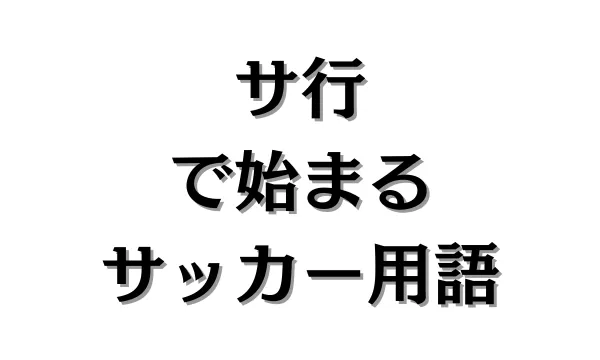
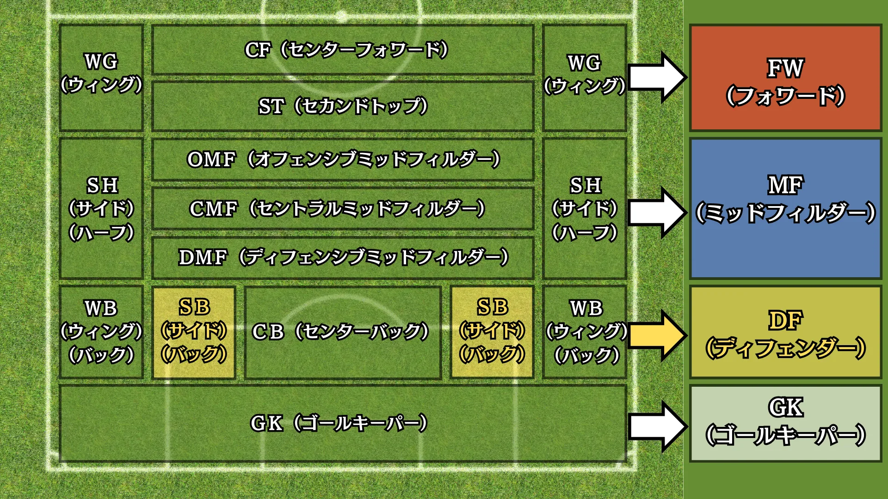
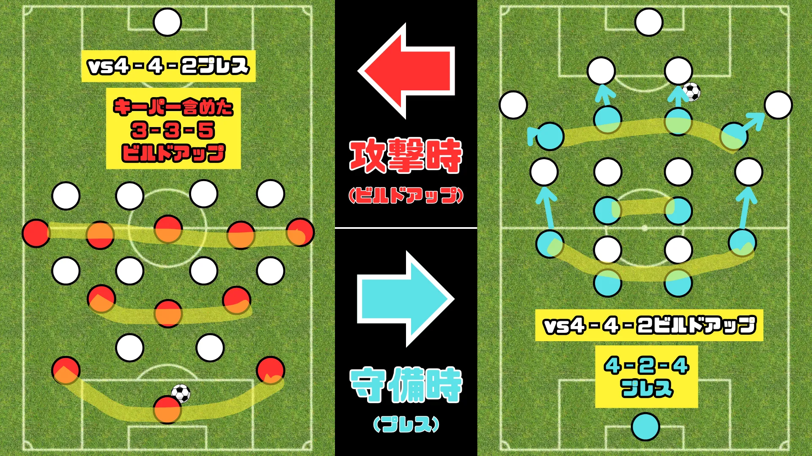
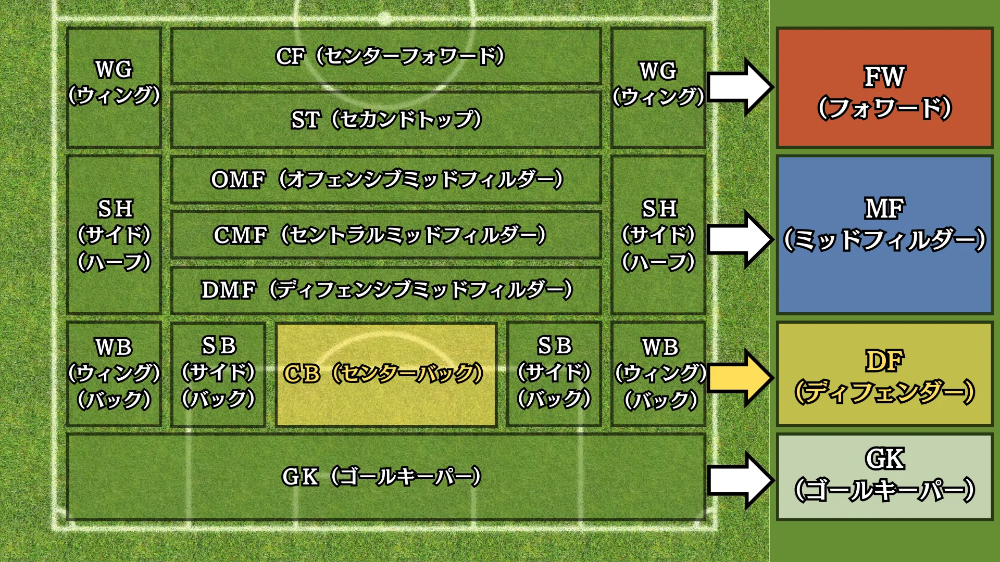

サ行で始まるサッカー用語


目 次
1. サで始まるサッカー用語。
SB（サイドバック）【★】

SB（サイドバック）とは、ポジションの一種で、サイドのDF（ディフェンダー）のことを指します。サイドバックは、守備能力だけでなく、ビルドアップにおける戦術理解、サイドを上下動するスタミナなどオールマイティーな選手が求められます。
またディフェンスラインの統率をするのはCB（センターバック）という認識が強いですが、実は、サイドバックがラインを一番見やすいため、それを統率するリーダーシップも求められます。
2. シで始まるサッカー用語。
システム【★★】
システムとは、フォーメーション（初期配置）にさらなる指示を加えたものです。
相手の状況も見て戦術を考えなければいけないので、フォーメーション（初期配置）を設定しただけでは選手個人の能力に依存した試合展開となります。
以下は、4-4-2というフォーメーションの相手に対するシステム例です。

ショートコーナー【★★】
ショートコーナとは、コーナーキックの一種で、キッカーが直接ペナルティエリア内にボールを蹴るのではなく、近くの味方に短くパスを出すことです。
3. スで始まるサッカー用語。
スイーパー【★★★★】
スイーパーとは、CB（センターバック）として分類される役割の一種です。
相手の攻撃を止める「ストッパー」と比べて、守備ラインのやや後方に位置します。
スイーパーの主な仕事は、こぼれ球の処理や味方のカバーリングを行うことです。
ストッパーが相手に積極的にぶつかって攻撃を防ぐのに対し、スイーパーは背後のスペースを守る役割を担い、状況を読む力や素早いカバーリングが求められます。
ただし、現代サッカーではセンターバック全体に守備だけでなく攻撃の組み立てなど多面的な能力が求められるようになり、スイーパーとストッパーの役割を区別する機会はほとんどなくなっています。
4. セで始まるサッカー用語。
セットプレー【★★】
セットプレーとは、試合中にプレーが一旦止まった後、決められた位置から再開されるプレーのことを指します。
1．フリーキック
ファウルや反則が起きた際に与えられるキックで、直接ゴールを狙える「直接フリーキック」と味方にパスを送る「間接フリーキック」があります。
2．コーナーキック
守備側がボールを自陣ゴールラインから出した場合に、コーナーアークから行う攻撃側のキック。
3．ゴールキック
攻撃側がボールを敵陣ゴールラインの外に出した際に、ゴールエリアから再開する守備側のキック。
4．スローイン
ボールがタッチラインの外に出た際、出した側の相手チームが手で投げて試合を再開するプレー。
5．PK（ペナルティキック）
ペナルティエリア内で守備側がファウルを犯した場合に攻撃側に与えられるキック。
CB（センターバック）【★】

CB（センターバック）とは、ポジションの一種で、中央のDF（ディフェンダー）を指します。
従来のCBは守備特化でフィジカル重視の選手が求められていたのに対して、現代ではそれらに加えて高度な戦術理解とビルドアップにおける基礎技術も重要視されています。
CBは「ゴールを守る専門家」ではなく「守備的司令塔」として、攻守万能なポジションに進化しています。
センタリング【★】
センタリングとは、パスの一種で、サイドからゴール前に送るパスのことを指します。
クロスとも呼ばれることがあり、両者の意味に違いはありません。
5. ソで始まるサッカー用語。
ゾーンディフェンス【★★】
ゾーンディフェンスとは、守備戦術の一種で、「相手」ではなく「エリア」を基準にディフェンスすることです。
ゾーンディフェンスでは、選手は自分の担当エリアを守ることに集中し、相手選手に直接つくのではなく、相手がそのエリアに侵入してきた場合に対応します。
「相手」を基準にした守備戦術は、マンツーマンディフェンスといい、セットプレー（コーナーキックやフリーキックなど）で一部採用されますが、オンプレー（試合が止まっていない状態）ではゾーンディフェンスが主流です。